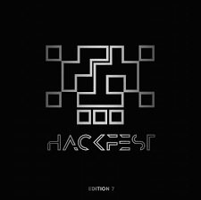

Insights from the Python Conference 2024 – Day 1
Hackfest is one of the biggest hybrid (online and offline) hacking events in America. It is a place where hackers, security experts, and cybersecurity enthusiasts come together to learn, share, and compete. There were a lot of interesting talks and workshops. The difficulty for following this event was that all the talks were in the middle of the night. The level of the talks was very high and I learned a lot from it. But because of the time difference, I could not follow the whole event. It was also pretty cool that there was a person who made drawings of the talks.
